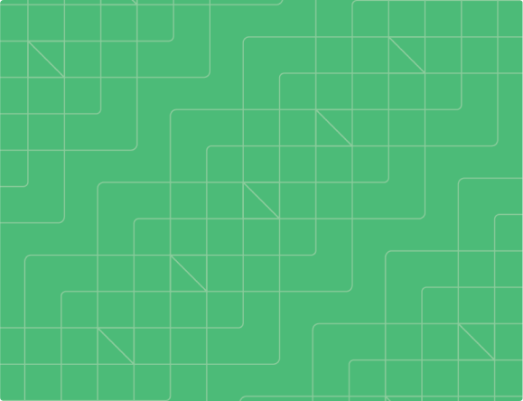
სიახლეები
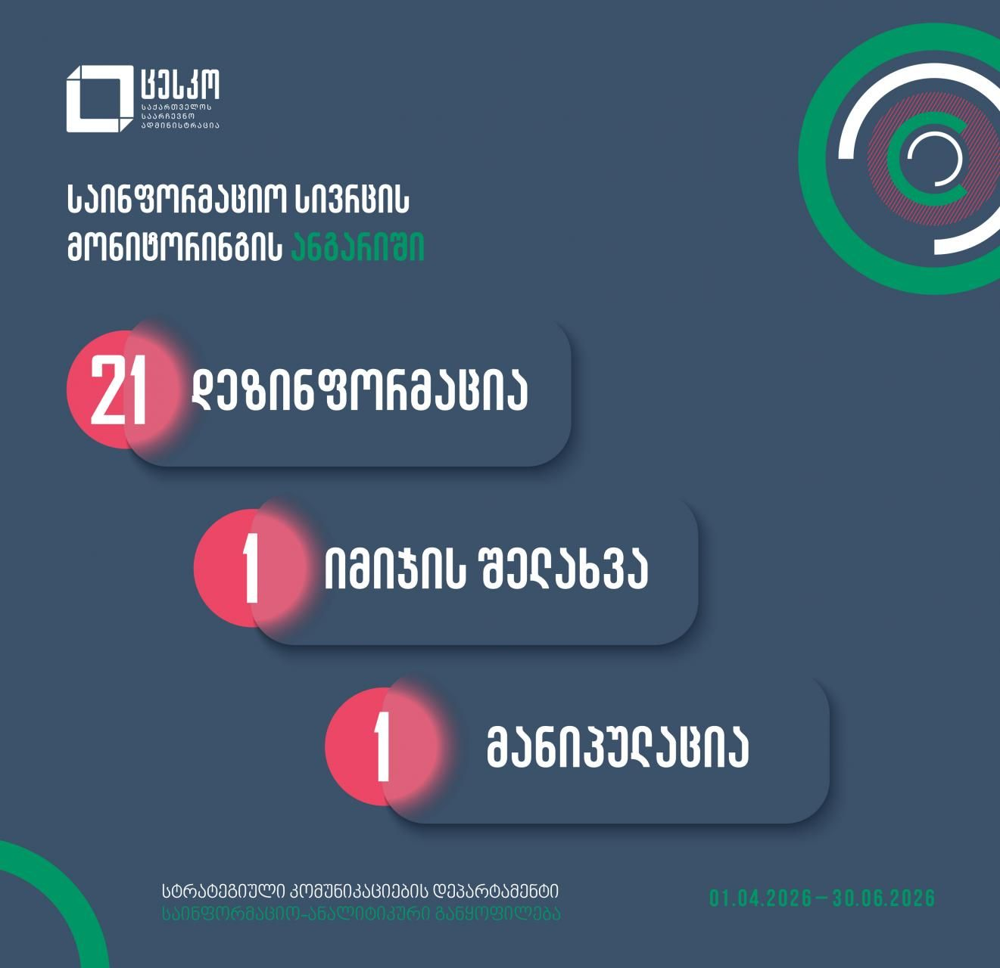
სიახლეები
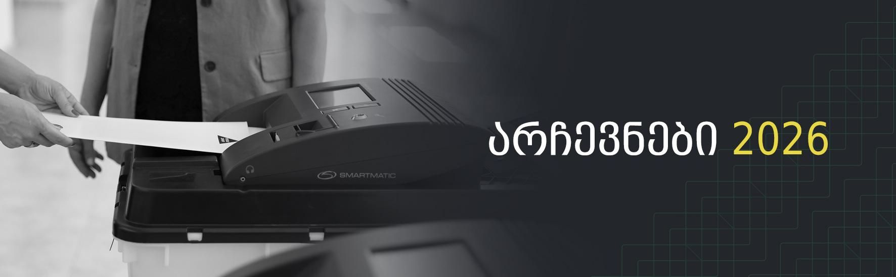
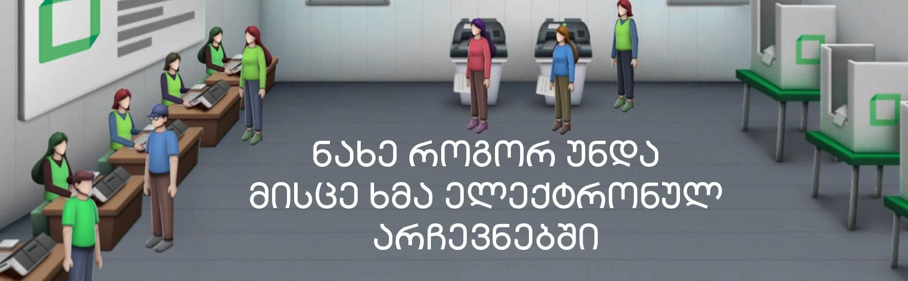
საარჩევნო რუკა
საარჩევნო ღონისძიებათა გრაფიკი
 საჩივრების რეესტრი
საჩივრების რეესტრი
 გენდერული პორტალი
გენდერული პორტალი
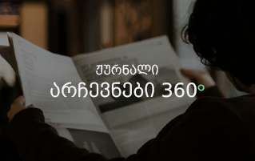
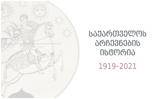
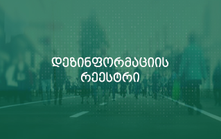
საარჩევნო ელექტრონული საშუალებების საერთაშორისო აუდიტის ანგარიში
საჩივრების რეესტრი
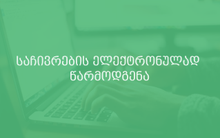
განცხადება საჩივრის ფორმები სასამართლო განჩინება სხდომის დანიშვნისა და მესამე პირების ჩაბმის შესახებ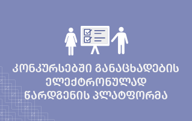
ინფორმაცია მუნიციპალიტეტების საკრებულოების გამოკლებული წევრების ადგილმონაცვლეების შესახებ
გენდერული პორტალი
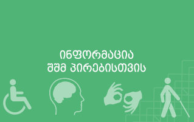
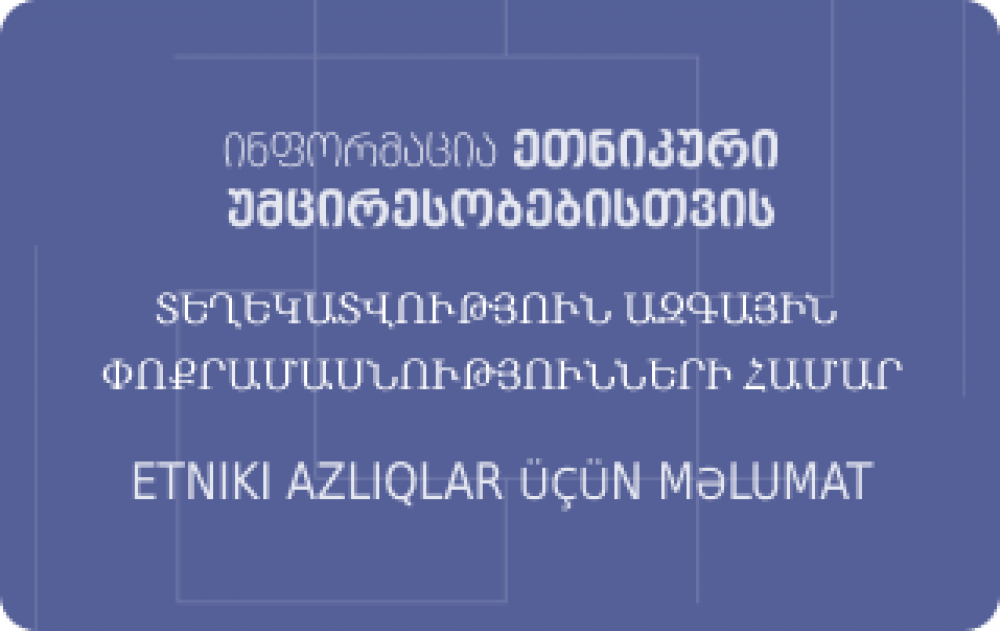
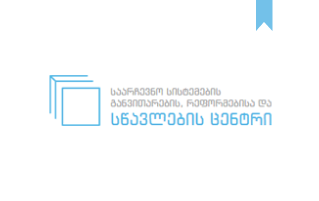